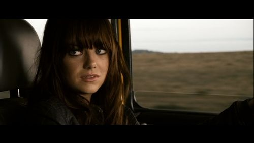
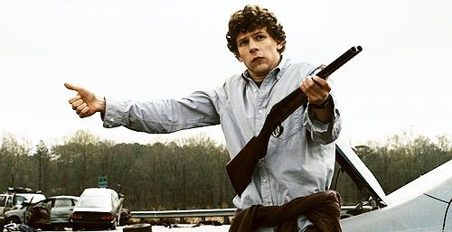
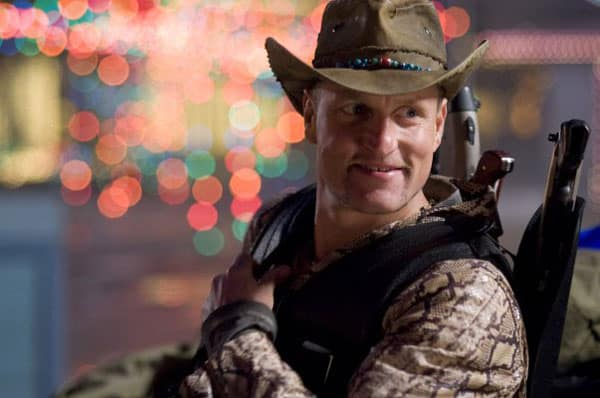
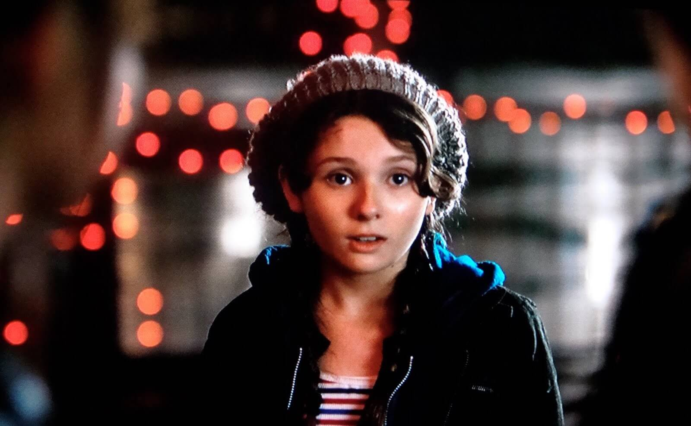

Zombie land is about the end the world where people become infected by a bite and turn in to a zombie. Columbus is on a journey to find his parents but follows a set of rules he invented in order to stay alive. Along on his journey he meets his new partner in crime Tallahassee and then Wichita and Little Rock.
| Emma Stone | Wichita |  | Jesse Eisenburg | Columbus |  |
|---|---|---|---|---|---|
| Woody Harrelson | Tallahasse |  | Abigail Breslin | Little Rock |  |